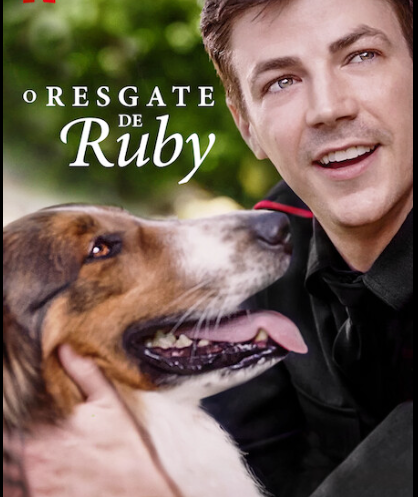

I finished my undergrad in Electronics and Communication Engineering and had work experience of 4years as a Java developer and as of now pursuing my masters in Computer Science.
This Movies is Based on a True Story. This story revolves around the person who is Chasing his dream to join an elite K-9 unit, a state trooper partners with a fellow underdog: clever but naughty shelter pup Ruby.
I personally liked this movie because the lead actor doesn't give up on his dreams at any cost though the naughty dog is making his life rough.
